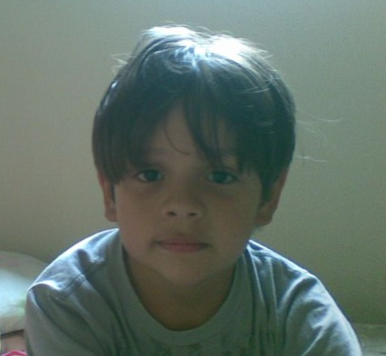

Me chamo Guilherme Fonseca da Silva, nasci no dia 10 de Julho de 2004, atualmente estudo Ciências da Computação na São Paulo Tech School - SPTech. Desde pequeno, sou apaixonado por tecnologia, dublagem e paleontologia e decidi representar uma dessas paixões em meu site. Lembro de passar dias assistindo a documentários para conhecer mais sobre esse mundo, essas criaturas, é tudo tão fantástico, quase fantasioso. Não me admira que algumas pessoas não consigam conceber a ideia de que essas criaturas realmente existiram, é estranho imaginar um mundo com criaturas gigantescas, répteis que poderiam facilmente ser maiores do que uma casa média brasileira, o período pré-histórico é sem dúvidas um material de estudo que sempre me despertou curiosidade. Toda essa paixão e interesse me fez cogitar em ser paleontólogo, mas a tecnologia foi quem roubou meu coração. Apesar disso, ainda gosto de estudar essas criaturas por hobby. Então minha escolha para o tema do projeto pessoal não poderia ser outra, eu tinha que falar sobre um dos meus assuntos favoritos, sobre uma das paixões da minha vida; os dinossauros.

O que este projeto representa?
Esse projeto representa uma parte importante da minha vida, minha paixão por dinossauros me mostrou que estudar algo que você gosta é simplesmente deslumbrante e prazeroso. Ao olhar para o passado, não consigo me lembrar do dia em que essa paixão nasceu, o que só mostra que é um assunto que eu gosto desde que me conheço por gente. Essa curiosidade sobre o mundo pré-histórico influenciou não apenas os meus hobbies, mas também minha determinação para explorar temas complexos e fantásticos.
Desafios e Mudanças
Desenvolver este projeto foi um verdadeiro desafio, entrei na faculdade sem qualquer experiência anterior com programação, ao ver o escopo do projeto individual, comecei a me organizar o quanto antes. Em meios à desafios, percebi que o fato do tema ser de um assunto que me agrada facilitou muito o desenvolvimento do mesmo, tornando-o prazeroso, mesmo que desafios surgissem no meio do caminho. Afinal: "Seguir em frente mesmo quando estiver difícil"
O fato de eu não seguir paleontologia como profissão, mantendo o tema apenas como hobby, é um exemplo de como mudanças podem acontecer na vida, eu aceitei à essa mudança sem abandonar o que me faz feliz. Esse projeto é a prova que mesmo seguindo por caminhos distintos e inicialmente não planejados, ainda podemos encontrar formas de nos conectar com nossas paixões.